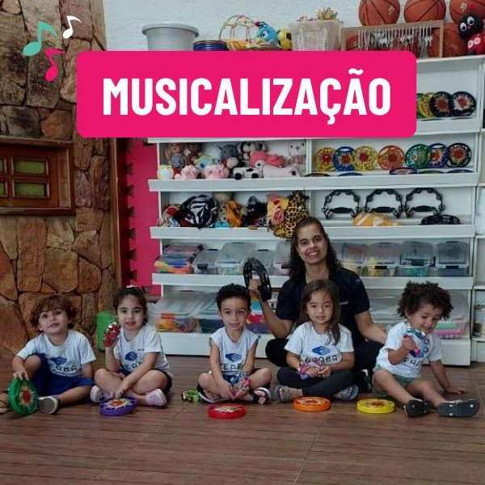

Na Escola CEABA, a música é mais do que uma linguagem sonora – é uma poderosa ferramenta pedagógica. Nosso compromisso com uma educação integral e humanizada passa também pelo som, pelo ritmo, pelas canções e pelas vivências musicais que acompanham os alunos desde o maternal até o ensino fundamental.
A professora Karlla Giovanna, musicista e pedagoga, é quem conduz esse projeto tão especial, levando a musicalização infantil como parte essencial da rotina escolar. Mas antes de explorarmos os muitos benefícios dessa prática, é importante entendermos a diferença entre dois conceitos fundamentais: educação musical e musicalização.
"A musicalização é uma vivência lúdica e sensorial. A criança é convidada a explorar o universo sonoro de forma espontânea, desenvolvendo suas habilidades musicais sem a necessidade de conhecimentos técnicos." — Profª Karlla Giovanna
Educação musical × Musicalização infantil
A educação musical é o ensino formal da música. Envolve teoria musical, leitura de partituras, prática instrumental e uma abordagem estruturada para o aperfeiçoamento em determinado instrumento.
Já a musicalização infantil, que é a base do trabalho realizado na Escola CEABA, é uma vivência lúdica e sensorial. A criança é convidada a explorar o universo sonoro de forma espontânea, desenvolvendo suas habilidades musicais sem a necessidade de conhecimentos técnicos. Essa abordagem é ideal para a infância, pois respeita o tempo e o interesse natural dos pequenos.
Como a musicalização é trabalhada na CEABA
Na Escola CEABA, a musicalização acontece de forma integrada à proposta e projetos pedagógicos. As aulas com a professora Karlla Giovanna envolvem atividades como:
- Cantar canções populares e autorais
- Ouvir diferentes gêneros musicais
- Manipular instrumentos de percussão
- Dançar e brincar com o corpo
- Reproduzir sons e ritmos do cotidiano
Essas experiências despertam a curiosidade musical e ao mesmo tempo promovem o desenvolvimento global da criança.
"Na música, a criança se expressa, se movimenta, se comunica e aprende. É um campo rico de descobertas e vínculos afetivos." — Profª Karlla Giovanna
Benefícios da musicalização infantil
Os ganhos da musicalização vão muito além do aspecto musical. Ela influencia positivamente diversas áreas do desenvolvimento infantil:
- Percepção auditiva: Melhora a capacidade de distinguir sons, ritmos e melodias. Essa escuta refinada é essencial para o desenvolvimento da linguagem, da leitura e da escrita.
- Desenvolvimento da fala: A exposição frequente à música estimula a articulação das palavras, amplia o vocabulário e melhora a pronúncia. Cantar é um exercício natural de dicção e memória verbal.
- Coordenação motora: Atividades como tocar instrumentos e dançar aprimoram a coordenação motora fina e ampla. Também desenvolvem a noção corporal e espacial.
- Concentração e memória: A prática musical exige atenção, escuta ativa e memorização de letras, sequências e padrões rítmicos. Tudo isso contribui para o desempenho escolar.
- Expressão emocional: A música é um canal seguro para a criança expressar sentimentos, sejam eles de alegria, tristeza ou ansiedade. Cantar, tocar ou dançar ajuda a lidar com emoções de forma positiva.
- Criatividade e imaginação: Improvisar sons, inventar letras ou criar instrumentos com materiais simples estimula a inventividade e o pensamento criativo.
- Habilidades sociais: Participar de rodas musicais, cantar em grupo e compartilhar instrumentos ensina colaboração, respeito e empatia.
- Autoconfiança: Aprender novas canções, se apresentar para os colegas e superar desafios musicais fortalece a autoestima e o sentimento de competência.
- Ritmo e construção lógica: Seguir um compasso, reproduzir padrões sonoros e entender repetições ajudam na organização mental e no raciocínio lógico.
Eventos pedagógicos musicais na Escola CEABA
A musicalização na CEABA ultrapassa os muros da sala de aula e ganha vida em eventos pedagógicos que envolvem toda a comunidade escolar. Destacamos dois projetos muito especiais:
Festival Ecológico da Canção: voltado para os alunos do ensino fundamental anos finais, esse evento promove aulas de canto, composição e ensaio, culminando em apresentações musicais por turma. É um momento de grande visibilidade, onde os alunos mostram seu talento para pais, colegas e toda a equipe escolar.
Música e Bebês: um encontro voltado para os bebês e suas famílias, aberto à comunidade em geral. Com dinâmicas musicais, palestras sobre desenvolvimento infantil e contação de histórias, o evento promove o vínculo afetivo e a sensibilização sonora desde os primeiros anos de vida.
"A música está presente em todas as fases da infância. Ao cantarmos com os bebês ou compormos com os adolescentes, estamos tocando mais do que notas — estamos tocando emoções." — Profª Karlla Giovanna
Uma experiência significativa
Mais do que ensinar música, a musicalização na Escola CEABA promove vivências que ficam na memória afetiva das crianças. As atividades são pensadas para acolher, estimular e respeitar cada etapa do desenvolvimento infantil, valorizando o protagonismo do aluno.
Na Escola CEABA, a música não é um momento isolado. Ela está presente nas festas, nos projetos interdisciplinares, nas rodas de conversa e no cotidiano da escola. É parte da nossa identidade e da nossa visão de educação.
Venha conhecer esse projeto
Se você acredita que a escola deve formar crianças criativas, sensíveis e confiantes, você vai se encantar com o nosso trabalho. A musicalização é uma das muitas formas que a Escola CEABA encontrou para transformar a educação em uma verdadeira sinfonia de crescimento.
Venha nos visitar e descubra como o som da infância pode ecoar por toda a vida!